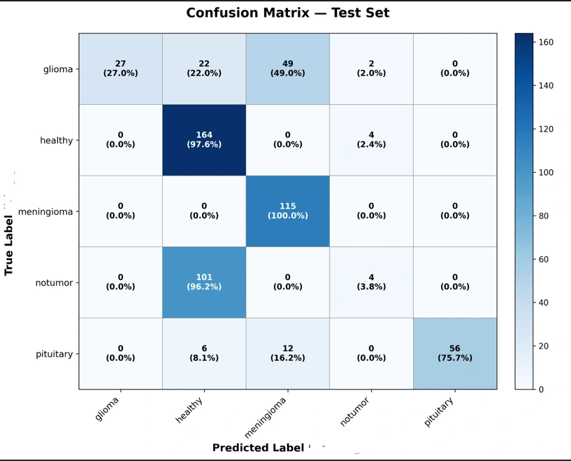
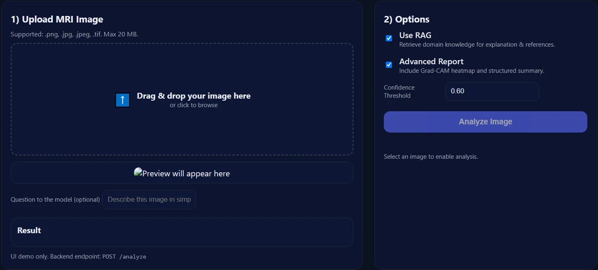

Applied machine learning · Graduation project
Brain MRI Classification
A research web application that classifies brain MRI images and shows which parts of the image influenced the prediction.

- External test accuracy
- 65.1%
- Training accuracy
- 99.2%
- External macro F1
- 0.5716
- External weighted F1
- 0.5765
What I built
I helped develop the Flask interface and the classification and explanation pipeline. EfficientNet-B0 predicts one of four classes: glioma, meningioma, pituitary tumor, or no tumor.
How the system works
- The Flask API preprocesses the image and sends it to the classifier.
- Grad-CAM highlights regions that influenced the model’s prediction.
- A local vision-language model uses retrieval-augmented generation to add explanations from a curated knowledge base.
What the evaluation showed
The report records 99.2% training accuracy and 65.1% accuracy on a separate external dataset. The difference shows that the model struggled with images from new sources. The project was developed for research and education.


